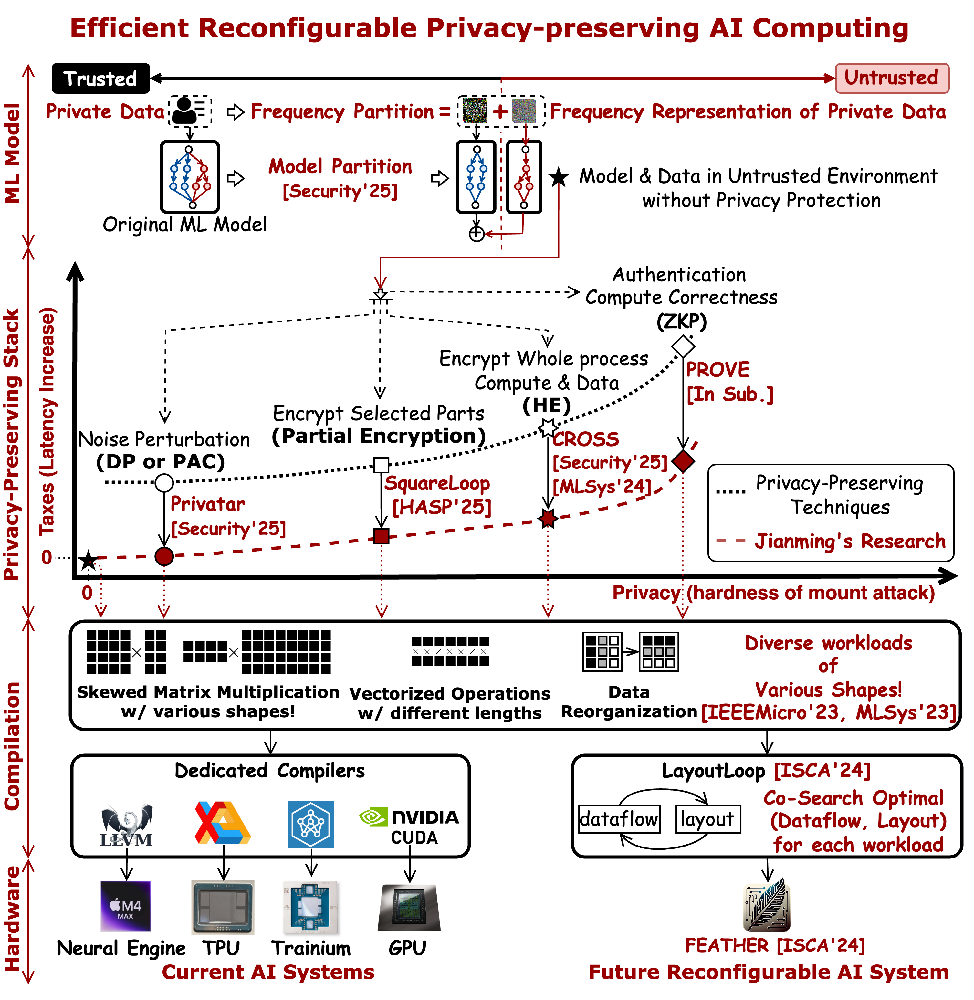
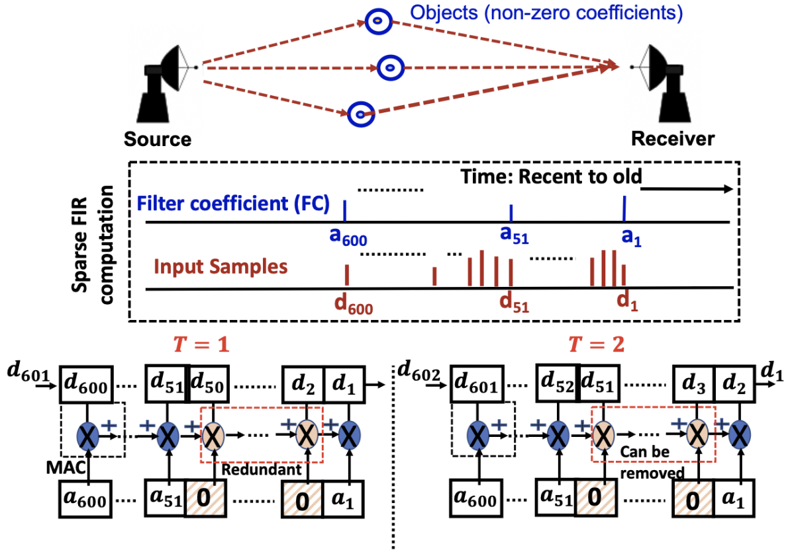

Jianming Tong
jianming [dot] tong [at] gatech [dot] edu
Ph.D. at Georgia Tech starting from Spring 2021
Advisor: Tushar Krishna
Main Developer for CROSS, FEATHER
My research is funded by Qualcomm Innovation Fellowship and SRC Jump 2.0
FPGA and FHE Lead in Synergy Lab @ Gatech

Research Interest
I'm a Computer Architect, focusing on system for AI and Cryptography via full-stack optimizations.
- Model (Software): ML Model with Privacy-preserving Capability by Design, e.g. Crypto-friendly ML Model.
- System: Latency/Accuracy/Privacy Navigation for Multi-Query Streams.
- Compilation: Convert Crypto Algorithm to be More Efficient on Existing Hardware.
- Architecture (Hardware): Reconfigurable Dataflow Accelerator for ML and Privacy-preserving ML.
- Performance Modeling: Performance Analysis Tool for ML Accelerators.

News
- [Nov. 2025] [Paper] Our work CROSS: Enable AI Accelerator for Homomorphic Encryption is being accepted to High-Performance Computer Architecture (HPCA'26), and will be presented at Sydney!
- [Nov. 2025] [Teaching] I gave a guest lecture of FEATHER at the "ECE 6120: Machine Intelligence" course at GWU hosted by Prof. Nan Wu.
- [Oct. 2025] [talk] I presented a poster on CROSS: Enable AI Accelerator for Homomorphic Encryption at ACE Annual Review @ Chicago
- [Oct. 2025] [DEMO] I give a multi-university demo on FEATHER at ACE Annual Review @ Chicago with Prof. Zhiru Zhang , Prof. Charith Mendis , and Prof. Subhasish Mitra , big thanks to the team Devansh Jain, Niansong Zhang, Hongzheng Chen and Saranyu Chattopadhyay!
- [Sep. 2025] [Talk] I gave a talk on CROSS: Enable AI Accelerator for Homomorphic Encryption at TechCon See u'all at Austin!
- [Sep. 2025] [Talk] I give a talk on FEATHER at UT Austin hosted by Prof. Mattan Erez!
- [Sep. 2025] [Paper] Our work SquareLoop: Explore Optimal Authentication Block Strategy for ML is being accepted to Hardware and Architectural Support for Security and Privacy ( HASP'25 ), co-located with MICRO'25 at Seoul!
- [Aug. 2025] [Award] Our work CROSS: Enable AI Accelerator for Homomorphic Encryption won the GT NEXT Award in recognition of our commitment to research and development that has the potential to significantly contribute to societal betterment! Go Yellow Jackets!
- [Jul. 2025] [Poster] Our work Privatar: Enabling Privacy-preserving Real-time Multi-user VR via Secure Outsourcing is being accepted at Usenix Security'25 as poster! See u'all Aug 13~15 at Seattle!
- [Jul. 2025] [Poster] Our work CROSS: Enable AI Accelerator for Homomorphic Encryption and Zero Knowledge Proof is being accepted at Usenix Security'25 as poster! See u'all Aug 13~15 at Seattle!
- [Jul. 2025] [Service] I co-interview Prof. Mengjia Yan on behalf of TcuArch and IEEE Micro Sipping Matcha of Security: A Fireside Chat With Mengjia Yan goes online! Check out the video recording here Video!
- [Jun. 2025] [Award] Our work CROSS: Enable AI Accelerator for Homomorphic Encryption won 2rd place at Unversity DEMO at DAC'25 ! U could run encrypted digit detction serving on Google Cloud with TPUv4 for free today!
- [Jun. 2025] [DEMO] I will give a demo on CROSS: Enable AI Accelerator for Homomorphic Encryption at DAC'25 See u all at SF!
- [May. 2025] [Talk] I gave a talk on CROSS: Enable AI Accelerator for Homomorphic Encryption and Zero Knowledge Proof at UMich hosted by Prof. Todd Austin!
- [Mar. 2025] [Tool] LayoutLoop from FEATHER [ISCA'24] has been integrated into NVlabs/Timeloop, details could be found at this PR and this slide, enjoy precise layout modeling!
- [Mar. 2025] [Paper] Our work Constrained Dataflow Accelerator for Real-Time Multi-Task Multi-Model Machine Learning Workloads has been accepted by ISPASS'25!
- [Mar. 2025] [Paper] Our work Scale-sim V3 has been accepted by ISPASS'25!
- [Jan. 2025] [Paper] Our work Leveraging ASIC AI Chips for Homomorphic Encryption has online released now!
- [Nov. 2024] [Teaching] I gave a guest lecture of FEATHER at the "Advanced Computer Architecture for Machine Learning" course hosted by Prof. Tony Geng.
- [Nov. 2024] [Talk] I give a talk on Leveraging AI ASIC for Homomorphic Encryption at NYU hosted by Prof. Brandon Reagon and Karthik Garimella!
- [Nov. 2024] [Service] I co-organized JOBS Workshop to help faciliating new grads for job hunting - go JOBS!
- [Nov. 2024] [Talk] I give a talk on FEATHER at WDDSA workshop co-located with MICRO'24 at Austin!
- [Oct. 2024] [Talk] I demo FEATHER at SRC ACE annual review ACE at Chicago!
- [Sep. 2024] [Paper] Our work
Real-time Digital RF Emulation – II: A Near Memory Custom Accelerator is accepted to the IEEE Transactions on Radar Systems (TRadar'24). - [Aug. 2024] [Award] I was selected as the student for ACE Newsletter highlight by SRC!
- [Aug. 2024] [Talk] I give a talk on FEATHER at SRC Liaison Meeting of ACE Center!
- [Aug. 2024] [Career] I join Google as a student researcher in Phazon team of PSS, more realistic privacy-preserving acceleration are coming, stay tuned!
- [Jul. 2024] [Talk] I give a talk on FEATHER at NVidia (HQ) and NVidia (Westford)!
- [Jun. 2024] [Talk] We debut FEATHER
A Reconfigurable Accelerator with Data Reordering Support for Low-Cost On-Chip Dataflow Switching at ISCA, Buenos Aires! - [May. 2024] [Talk] I give a talk on FEATHER at MIT
- [May. 2024] [Award] I am selected as "ML and System Rising Star" by ML Commons, excited to meet you all at Nvidia HQ at Jul 15~16.
- [May. 2024] [Award] Our team "CipherFlitFort" is awarded Startup Launch by CreateX at Georgia Tech, Go Jackets!
- [Apr. 2024] [Award] I am selected as DAC Young Fellow for DAC 2024.
- [Mar. 2024] [Paper] Our work
FEATHER: A Reconfigurable Accelerator with Data Reordering Support for Low-Cost On-Chip Dataflow Switching is accepted to the International Symposium on Computer Architecture (ISCA'24). - [Feb. 2024] [Paper] Our work
SmartPAF: Accurate Low-Degree Polynomial Approximation of Non-polynomial Operators for Fast Private Inference in Homomorphic Encryption is accepted to the Seventh Conference on Machine Learning and Systems (MLSys'24). - [Feb. 2024] [Service] We started course 6.192 Constructive Computer Architecture in three schools together this year (MIT, EPFL, GaTech) - recordings available online, Go Architects!
- [Jan. 2024] [Service] I served AEC for ISCA'24.
- [Nov. 2023] [Service] I join Computer Architecture Student Association ( CASA ) steering team, from the architects for the architects.
- [Oct. 2023] [Talk] I gave a talk on
SUSHI andPAF-FHE at HAN Lab @ MIT. - [Sep. 2023] [Award] I won Best Poster Award for
presenting our work
SUSHI at (IAP Workshop@MIT). - [Sep. 2023] [Paper] Our work
Hardware-Software co-design for real-time latency-accuracy navigation in tinyML applications is accepted to the Journal (IEEE micro). - [Sep. 2023] [Career] I join MIT as a visiting researcher in CSAIL hosted by Dr. Arvind.
- [Aug. 2023] [Paper] Our work
SNATCH: Stealing Neural Network Architecture from ML Accelerator in Intelligent Sensors is accepted to the IEEE SENSORS conference (SENSORS'23). - [Jul. 2023] [Paper] Our work
On Continuing DNN Accelerator Architecture Scaling Using Tightly-coupled Compute-on-Memory 3D ICs is accepted to the IEEE Transactions on Very Large Scale Integration Systems (TVLSI'23). - [Jul. 2023] [Award] I win 2023 Qualcomm Innovation Fellowship, thank you Qualcomm!
- [Jul. 2023] [Service] I serve as AEC for ASPLOS'24.
- [Jun. 2023] [Talk] I gave a talk on
SUSHI andPAF-FHE at CAG Lab @ XJTU University. - [May. 2023] [Paper] Our work
A Reconfigurable Accelerator with Data Reordering Support for Low-Cost On-Chip Dataflow Switching accepted to the 3rd On-Device Intelligence Workshop (ODIW'23@MLSys'23). - [May. 2023] [Paper] Our work
ReLU-FHE: Low-cost Accurate ReLU polynomial approximation in Fully Homomorphic Encryption Based ML Inference accepted to the 3rd On-Device Intelligence Workshop (ODIW'23@MLSys23) . - [Apr. 2023] [Paper] Our work
SUSHI: SubGraph Stationary Hardware-Software Inference Co-design accepted to the Sixth Conference on Machine Learning and Systems (MLSys'23). - [Apr. 2023] [Paper] Our work
FPGA-Based High-Performance Real-Time Emulation of Radar System using Direct Path Compute Model accepted to the International Microwave Symposium (IMS'23). - [Mar. 2023] [Talk] I give a talk on
Enable Best ML Inference and Training: A systematic Approach at EIC Lab @ Georgia Tech. - [Mar. 2023] [Paper] Our work
A High Performance Computing Architecture for Real-Time Digital Emulation of RF Interactions accepted to the In Proc of IEEE Radar Conference (RadarConf'23). - [Nov. 2022] [Talk] I give a talk on
Full-Stack ML Dataflow, Mapping and SW/HW Co-Design and Search at NICS-EFC Lab @ Tsinghua University. - [Jul. 2022] [Tutorial] I give a tutorial on
MAERI 2.0: An End-to-end framework to explore architecture design space on FPGA at ICS 2022. - [Jul. 2022] [Talk] I present our work
FastSwtich: Enabling Real-time DNN Switching via Weight-Sharing at the 2nd Architecture, Compiler, and System Support for Multi-model DNN Workloads Workshop Workshop @ ISCA'23 . - [Apr. 2022] [Award] I receive Finalist in Qualcomm Innovation Fellowship, thank you Qualcomm!
- [Mar. 2022] [Award] I win 2nd place in SCS Poster Competition at Georgia Tech, thank you SCS!
- [Nov. 2021] [Paper] Our work
A Configurable Architecture for Efficient Sparse FIR Computation in Real-time Radio Frequency Systems accepted to International Microwave Symposium (IMS'21). - [Aug. 2021] [Paper] Our work
ac2SLAM: FPGA Accelerated High-Accuracy SLAM with Heapsort and Parallel Keypoint Extractor accepted to FPT'21.code - [Mar. 2021] [Paper] Our work
SMMR-explore: Submap-based multi-robot exploration system with multi-robot multi-target potential field exploration method accepted to ICRA'21.codedemo - [Mar. 2021] [Book] Our translated book
On-chip Network publicly released [purchase translated version] [English version -- Free for University] - [Feb. 2021] [Paper] Our work
PIT: Processing-In-Transmission with Fine-Grained Data Manipulation Networks accepted to ToC'21. - [Jan. 2021] [Career] I kick-off my Ph.D. career at Georgia Tech, go Yellow Jackets!
- [Dec. 2020] [Paper] Our work
COCOA: Content-Oriented Configurable Architecture Based on Highly-Adaptive Data Transmission Networks accepted to GLSVLSI'21.
Leading Publications (* Equal Contribution)

Collaborative Publications (* Equal Contribution)
As Collaborator or Mentor


COCOA: Content-Oriented Configurable Architecture Based on Highly-Adaptive Data
Transmission
Networks
Proceedings of the 2020 on Great Lakes Symposium on VLSI (GLSVLSI),
2020.
Insight: Adding NoC between Mem-Cache-CPU for supporting Sorting, Ordering and
Multicasting (SOM) could boost 25X CPU perfromance for matrix inversion.
Workshops
A Reconfigurable Accelerator with Data Reordering Support for Low-Cost On-Chip Dataflow
Switching
ReLU-FHE: Low-cost Accurate ReLU Polynoimal Approximation in Fully Homomorphic Encryption Based
ML
Inference
FastSwtich: Enabling Real-time DNN Switching via Weight-Sharing
Book
On-chip Network (Chinese)
Translator: Pengju Ren, Tian Xia, Jianming Tong, Pengcheng Zong, Haoran Zhao
Abstract
This book targets engineers and researchers familiar with basic computer architecture concepts who are interested in learning about on-chip networks. This work is designed to be a short synthesis of the most critical concepts in on-chip network design. It is a resource for both understanding on-chip network basics and for providing an overview of state of-the-art research in on-chip networks.
Translator: Pengju Ren, Tian Xia, Jianming Tong, Pengcheng Zong, Haoran Zhao
Abstract
This book targets engineers and researchers familiar with basic computer architecture concepts who are interested in learning about on-chip networks. This work is designed to be a short synthesis of the most critical concepts in on-chip network design. It is a resource for both understanding on-chip network basics and for providing an overview of state of-the-art research in on-chip networks.
Education
Georgia Institute of Technology, USA
Ph.D. in Computer Science • Jan. 2021 to Present
Advisor: Prof. Tushar Krishna
Ph.D. in Computer Science • Jan. 2021 to Present
Advisor: Prof. Tushar Krishna
Georgia Institute of Technology, USA
MS. in Computer Science • Jan. 2021 to May 2024
Advisor: Prof. Tushar Krishna
MS. in Computer Science • Jan. 2021 to May 2024
Advisor: Prof. Tushar Krishna
Xi'An Jiaotong University, China
B.E. in Electrical Engineering • Sep. 2016 to Jun. 2020
Advisor: Prof. Pengju Ren
B.E. in Electrical Engineering • Sep. 2016 to Jun. 2020
Advisor: Prof. Pengju Ren
Experience
Massachusetts Institute of Technology, USA
Research Associative • Feb. 2024 to Feb. 2025
Advisor: Prof. Tushar Krishna , Host: Prof. Arvind
Research Associative • Feb. 2024 to Feb. 2025
Advisor: Prof. Tushar Krishna , Host: Prof. Arvind

Rivos Inc., Mountain View CA
Ph.D. Intern in Computer Architecture • May. 2023 to Aug 2023
Ph.D. Intern in Computer Architecture • May. 2023 to Aug 2023
Pacific Northwest National Lab (PNNL), Battelle WA
Research Intern in Computer Architecture • Jun. 2022 to Aug 2022
Research Intern in Computer Architecture • Jun. 2022 to Aug 2022

Alibaba DAMO Academy, Beijing
Research Intern in Fully Homormophic Encryption Accelerator • Jul. 2021 to Aug. 2021
Research Intern in Fully Homormophic Encryption Accelerator • Jul. 2021 to Aug. 2021
Tsinghua University, Beijing
(Visiting Student) Research Assistant in Robotics • Aug. 2020 to Jan. 2021
Advisor: Prof. Yu Wang
(Visiting Student) Research Assistant in Robotics • Aug. 2020 to Jan. 2021
Advisor: Prof. Yu Wang
Honors and Awards
2nd Place in
University
DEMO
first demonstration of superiority of AI ASICs in HE acceleration
Jun. 2025
first demonstration of superiority of AI ASICs in HE acceleration
Jun. 2025
Winner in Qualcomm
Innovation Fellowship
in recognition of runtime latency-accuracy navigation
Jul. 2023
in recognition of runtime latency-accuracy navigation
Jul. 2023